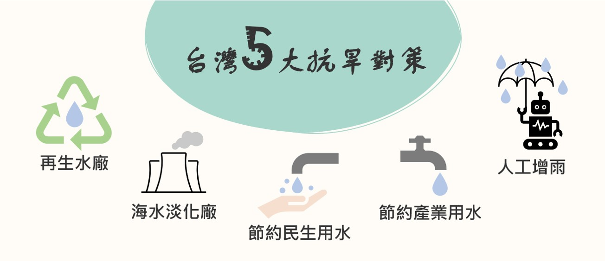

台灣北中南水情
北部水情
翡翠水庫(台北、新北)

石門水庫(新北、桃園、新竹)

中部水情
德基水庫(台中)

日月潭水庫(南投)

南部水情
曾文水庫(嘉義、台南)

烏山頭水庫(台南)
![烏山頭水庫]()
水庫即時水情：
台灣的水都用到哪裡去了？
根據水利署統計，台灣用水主要分為農業用水、工業用水與生活用水三大類， 根據2016~2018資料顯示，總用水量有逐年上升的趨勢，其中，農業用水占所有用水量高達七成、民眾的生活用水占二成，工業用水占一成，由此可見台灣用水在農業上消耗甚多。 為了解決可用水缺乏的問題，針對用水量最高的農業用水進行改善，在水情吃緊地區，農委會介入輔導以輪灌、啟動地下水井、抽取回歸水方式因應，使水資源達到永續的運用； 在果園的部分可以在需水量高的時期，採用噴灌節水的模式，也可以藉由減少果園除草次數，避免土壤水分散失，提高水資源的利用率。
台灣三大用水量統計
用水比例
台灣哪縣市民眾用水最兇？
雨下得少，但民眾平均用水量卻增加。2019年全國自來水生活用水量23.06億立方公尺，較2018年增1.8%，平均每人每天用水284公升，已連續4年增加。 其中，水情相對穩定的台北市、新北市、基隆市與嘉義縣的民眾，用水量都超過平均且居全球各縣市前五名。
民眾生活用水量增加，對整體水資源的利用也是一大壓力。我們可以怎麼節約用水呢？
缺水可能不再是短期現象，中研院最新的「台灣未來的乾旱問題與因應」研究指出，在氣候變遷影響下，未來石門及桃園灌區的農業缺水率可能超過40%， 進而影響糧食的生產與供給；北部地區的整體供水能力則會下降24%，民生用水嚴重受到影響。 長期來說，20年後春季降雨量可能減少13.2%、連續乾日天數會是現在的1.5倍，因此政府需積極推動氣候緊急的意識，及早因應未來乾旱， 人們唯有從平常生活省水開始才能使水資源獲得更好的運用，避免浪費。

台灣的5大抗旱對策
1.再生水廠
永康水資源回收中心及再生水廠總投資25.75億元，每天可處理2.9萬噸污水供產業使用，每天處理0.8萬噸再生水配送給南科園區，後續安平跟仁德也將再建2座再生水廠，台積電也在南科自建再生水廠。
2.海水淡化廠
政府投資8.9億元，在新竹南寮興建海水淡化廠，2月已在試產，每天提供1.3萬噸民生用水。台塑六輕海水淡化廠預定2022年8月完成，該廠斥資53.4億元興建，每天可產10萬噸的淡水。
3.節約民生用水
缺水地區實施自來水減壓供水
4.節約產業用水
推動用水大戶節水計畫，使用省水標章用水器材、設置雨水貯留系統達到用水減量外，並設置全廠廢水分流與回收系統設施，有效將全廠排放廢液進行種類分流，並依照其特性導入不同的回收系統
5.人工增雨
水利署與國防部空軍氣象聯隊及國家中山科學研究院人員合作，已經在石門水庫集水區進行空中及地面增雨作業，目前石門水庫水量增加230.66公尺，跟鯉魚潭水庫是台灣16個水庫中唯二成長者。
